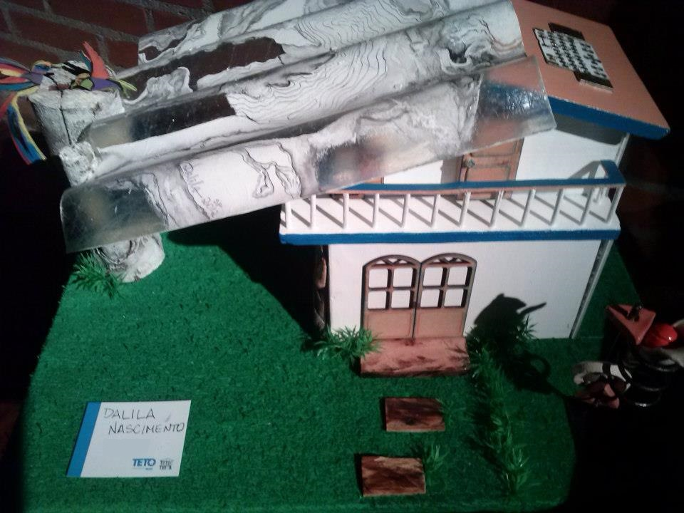

Espaço YUCCA
Aulas de Modelagem com Evolução para Esculturas. A partir do mês de Junho/2019, às terças-feiras - 14hs. Entre em contato. Vagas limitadas!
Galeria AUTVIS
Artista representada pela AUTVIS - Associação Brasileira dos Direitos de Autores Visuais, uma associação sem fins lucrativos que trabalha em prol dos direitos autorais de artistas plásticos, fotógrafos, escultores ilustradores, designers, grafiteiros, etc. AUTVIS
Workshop de Máscaras
"Descubra-se, Abra Seu Canal para o Hoje e Amanhã" Workshop de Máscaras
Projeto TETO & TINTA
Participação no Projeto TETO & TINTA entre 4 e 21 de dezembro/2012 exposto no espaço MATILHA CULTURAL.
Feitio de Oração
Participação no projeto "Feitio de Oração", com organização de Maria dos Anjos, no Conjunto Nacional - Av. Paulista / São Paulo; e em Junho/2012 exposição oficial do projeto na CASA DE PORTUGAL.

A Casa e a Natureza